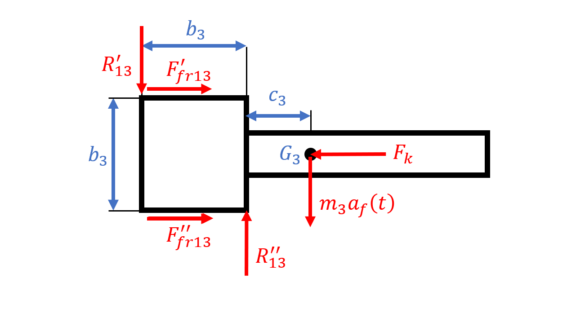

I modeled a spring–mass slider with dry friction to size a needle impact for a rocket trigger. The governing second-order ODE was solved by splitting into the homogeneous part and a particular solution via variation of parameters, then integrated in time with an embedded RK4 scheme to capture the needle’s contact event and momentum at impact.
Free-Body Diagram & Model
The contact mode was determined from the friction geometry (single resultant beyond the slider length), giving a consistent dry-friction direction during pre-impact motion. From moment/force balances, normal reactions were expressed in terms of inertial terms; substituting into the translational equation yielded a nonlinear, forced second-order ODE in the slider coordinate.
Solution Method
The ODE was rearranged as a nonhomogeneous equation. I solved the homogeneous part from the characteristic roots, then obtained the particular solution by variation of parameters. Initial conditions were applied to get the full analytical expression. For time histories and the contact event, I advanced the state with RK4 (with an RK5 error estimate), detected the crossing when the slider displacement reached the battery location, and recorded the velocity at that instant.
Impact Detection & Momentum Check
Impact occurs when the computed displacement first equals the collision position. The corresponding velocity provides the needle momentum p = m v that must exceed the catalog requirement to trigger the battery. I explored design variables (spring pre-compression, friction coefficient) to satisfy the momentum threshold. :contentReference[oaicite:3]{index=3}
Lessons Learned
- RK4 with event detection is reliable for impact timing and momentum evaluation in piecewise-smooth systems.
- Increasing spring compression raises impact momentum efficiently; reducing friction helps but has diminishing returns.
- Analytical dynamics (Lagrange) simplifies EOM derivation when nonlinearity from friction is bounded and modeled consistently.